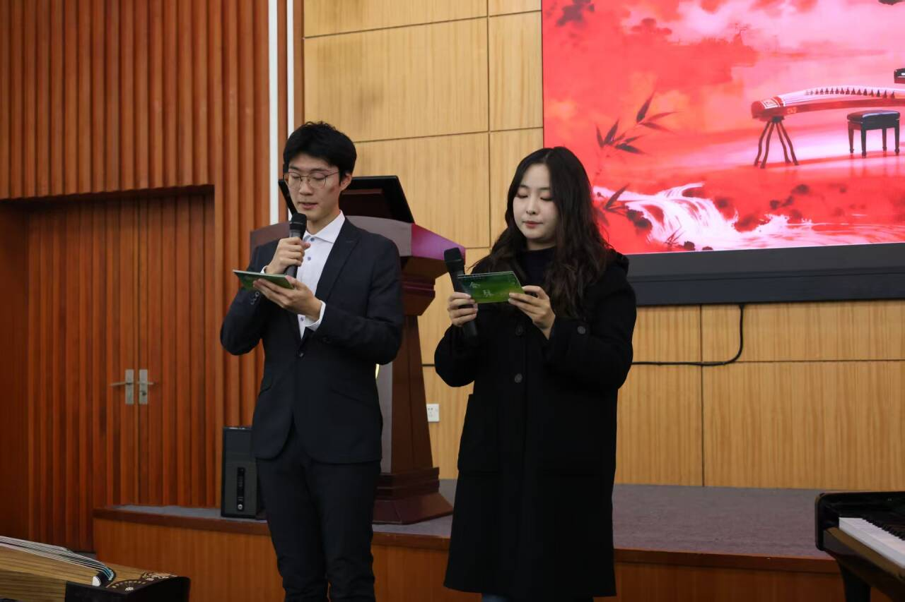

学院通知 · 校园活动
合弦——第七期“图书馆之夜”钢琴音乐会举行
发布时间：2025-12-02 09:29:05
11月29日晚七时，四川大学图书馆与沐心钢琴志愿者队联合主办的第七期“图书馆之夜”钢琴音乐会——“合弦”，在江安图书馆明远学堂举行。二十余位志愿者同学在近两小时内，以指尖旋律绘就声音画卷，带领观众完成一场横跨东西、融汇古今的音乐之旅。 “图书馆之夜”钢琴音乐会主持人陆佳邑同学和李舜尧同学 音乐会在网络空间安全学院王仲涛同学演奏的《如愿》中拉开序幕，深情琴音道出山河寻常里的世代传承。随后，马克思主义学院黄麒玮同学以《特别的人》点亮生命中的不期而遇。华西临床医学院李玉琢同学与林思羽同学的四手联弹巧妙衔接《诀别书》的古典哀婉与《原野追逐》的星际浩瀚，实现了一场跨越维度的情感对话。 沐心钢琴志愿者队志愿者同学演奏曲目 东方意蕴在琴键上悠然舒展。华西临床医学院杨曾钰同学指下的《浏阳河》质朴清新，匹兹堡学院李舜尧同学的《青玉案・元夕》则复活了南宋元夕“灯火阑珊”的千年情思。电气工程学院佟彦佳同学带来的《彩云追月》，轻盈勾勒出云月相逐的岭南夜色。 沐心钢琴志愿者队志愿者同学演奏曲目 西方经典篇章同样熠熠生辉。华西临床医学院王妍然同学演绎德彪西《月光》的朦胧诗意，商学院胡欣睿同学奏响贝多芬《月光奏鸣曲第三乐章》的激情澎湃。“钢琴诗人”肖邦的作品在多位同学指下绽放多元魅力，匹兹堡学院林博松同学的《a小调圆舞曲》内敛沉静，空天科学与工程学院朱景睿同学的《小狗圆舞曲》活泼灵动，软件学院刘艺航同学的《黑键练习曲》技巧炫丽。水利水电学院冯镜树同学献上的李斯特《匈牙利狂想曲第六号》更以豪放气势震撼全场。 沐心钢琴志愿者队志愿者同学演奏曲目 华西口腔医学院袁婧芳同学与计算机学院曲鸿烨同学分别呈现拉赫玛尼诺夫的《音乐瞬间》与《升c小调前奏曲》，展现俄式浪漫的激越深沉；数学学院王采樵同学与匹兹堡学院肖涵予同学则分别捕捉了斯克里亚宾与舒伯特笔下的灵光瞬间。 沐心钢琴志愿者队志愿者同学演奏曲目 当音符从经典跃入现代，水利水电学院朱品多同学的《泪水之城》空灵忧伤，华西临床医学院李欣怡同学的《申城之光》跃动都市繁华。尾声处，数学学院鲁益杰同学与外国语学院刘泊乐同学以钢琴与古筝合奏《囍》，跨界融合惊艳全场，为音乐会画上圆满句号。 “图书馆之夜”钢琴音乐会演职人员合影 “合弦”，是钢琴与钢琴、钢琴与竹笛、钢琴与古筝的相辅相伴，是音符的和谐交织，更是演奏者与倾听者间的心灵共振。四川大学图书馆“图书馆之夜”正是一座流动的美育课堂，让书香与乐韵交织，使知识在旋律中生长出温度，让心灵于艺术中寻得回响。曲终韵未绝，一期一相逢，期待下一次，以弦动心。 图：沐心钢琴志愿者队 张力丹 四川大学图书馆志愿者队 徐佳琪 文：沐心钢琴志愿者队 张力丹
